В задании вы увидите снимок клеток крови человека. Ваша задача - определить к какому типа относится клетка на изображении.
Для выбора правильного типа клетки нужно опираться на описания и примеры, приведенные ниже. При этом выбрать нужно только один тип из предложенных.
| № | Название | Описание | Схематичное изображение | Пример 1 | Пример 2 |
| 1 | Эозинофил | Цвет скорее розовый. Внутри находится ядро, разделенное на две дольки перетяжкой посередине; такой особенности больше нет ни у одного другого вида. В розовой толще видны красные и оранжевые точки-включения (зернистость). | 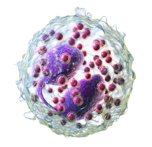 | 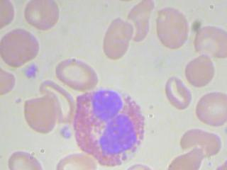 | 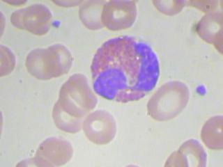 |
| 2 | Лимфоцит | Наличие круглого или овального, крупного ядра и отсутствие зернистости. Обладают небольшими размерами, почти отсутствует цитоплазма - содержимое клетки. | 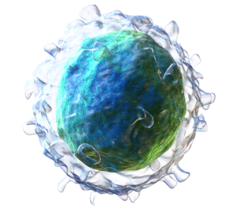 | 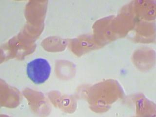 | 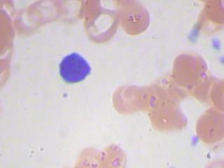 |
| 3 | Моноцит | Ядро обычно не разделенно на фрагменты, крупное, темное, чуть вытянутое, выглядящее в виде боба. Имеют довольно большой размер. Могут быть видны белые включения - лизосомы. | 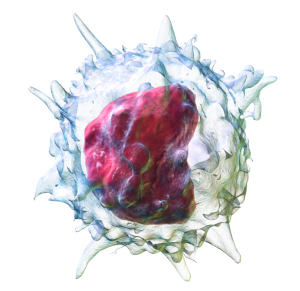 | 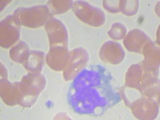 | 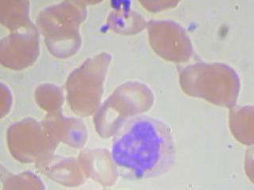 |
| 4 | Нейтрофил | Ядро разделено на несколько (2-4) неодинаковых сегментов, соединенных между собой перетяжками или вытянутое ядро, которое представлено в виде прямой или изогнутой палочки. Внутри розовой толщи хорошо выражена зернистость чаще фиолетовая. | 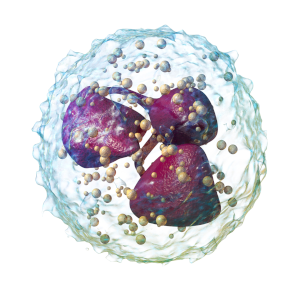 | 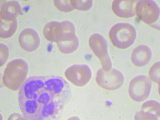 | 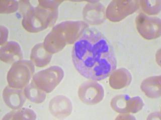 |